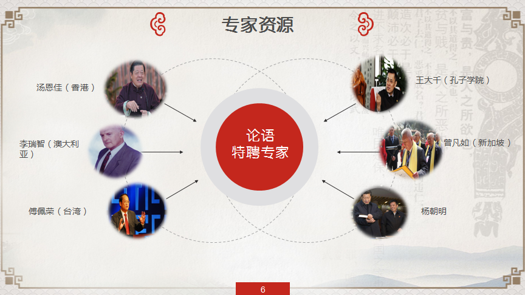
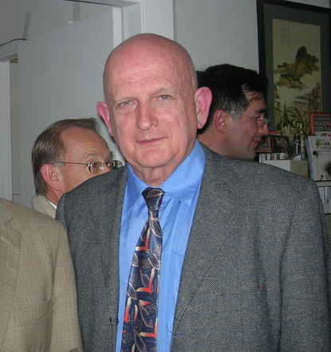

合作专家介绍

汤恩佳

香港孔教学院院长、世界儒商联合会会长、国际儒学联合会副理事长，美国爱奥华威斯理安大学工商管理博士，世界著名儒学文化名人。任香港特别行政区政府第九、十届、十一届中国人民代表大会选举委员会成员，第一、二、三、四届立法会委员及行政长官推选委员会委员，亚洲羽毛球总会永远名誉会长等，300多个社会上各界荣誉职衔。他在香港政府礼宾编制排名(Hong Kong SAR Order of Precedence)第十一。
李瑞智（reg little）
国际儒联副会长，曾担任澳大利亚外交官二十五年，相继任职于日本，老挝，孟加拉，美国纽约，爱尔兰，中国香港，中国大陆，瑞士和加勒比地区。他曾在澳大利亚堪培拉主管北亚，国际经济组织及政策规划的代表团担任代表以及五个具体事务的负责人，同时还是澳大利亚中国理事会的执行董事。获得了日文与中文的高级语言资格。